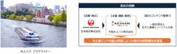
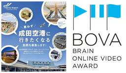
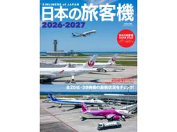
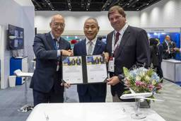
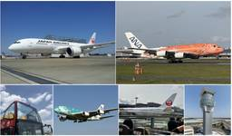

AIRLINE web -月刊エアライン×航空旅行-
https://airline.ikaros.jp
飛行機の運航を支える最前線、魅力あふれる空の旅のサービス、飛ぶためのテクノロジーやエアライン・空港の最新ビジネス動向、飛来機の撮影＆投稿など趣味として楽しむ航空の世界まで幅広く情報をお届けします。
フィード
JAL、国内初の完全自動飛行ドローンを活用した航空機外観検査の検証を開始
AIRLINE web -月刊エアライン×航空旅行-
JALとフランスのドローンメーカーであるDonecleは、2026年6月末より国内初となる完全自動飛行ドローンを活用した航空機外観検査の社内検証を開始した。これまでの検証状況を踏まえ、9月11日にその様子が報道公開され […]The post JAL、国内初の完全自動飛行ドローンを活用した航空機外観検査の検証を開始 first appeared on AIRLINE web -月刊エアライン×航空旅行-.
2日前
ANAオリジナルアロマにディフューザー用リフィルが登場
AIRLINE web -月刊エアライン×航空旅行-
ANA オリジナルアロシリーズ。 全日空商事は、ANAの香りを自宅で楽しめる「ANAオリジナルアロマ」シリーズから、スティックディフューザー用のリフィルを発売した。9月8日よりANA公式ECサイト「ANAショッピング […]The post ANAオリジナルアロマにディフューザー用リフィルが登場 first appeared on AIRLINE web -月刊エアライン×航空旅行-.
2日前
ニコニコレンタカー 福岡空港国際線ターミナル店が10月1日にグランドオープン
AIRLINE web -月刊エアライン×航空旅行-
「ニコニコレンタカー福岡空港国際線ターミナル店」。 10月1日に「ニコニコレンタカー福岡空港国際線ターミナル店」がオープンする。1月に移転リニューアルオープンした「成田空港店」、2月にグランドオープンした「熊本空港店」 […]The post ニコニコレンタカー 福岡空港国際線ターミナル店が10月1日にグランドオープン first appeared on AIRLINE web -月刊エアライン×航空旅行-.
2日前
大韓航空、スターリンクによる無料機内インターネットサービスを9月15日から順次開始
AIRLINE web -月刊エアライン×航空旅行-
大韓航空は9月11日、9月15日よりスペースXが提供する低軌道衛星通信サービス「スターリンク」を活用した機内Wi-Fiサービスを開始すると発表した。 エアバスA350-900やボーイングB777-300ERなどの大型 […]The post 大韓航空、スターリンクによる無料機内インターネットサービスを9月15日から順次開始 first appeared on AIRLINE web -月刊エアライン×航空旅行-.
2日前
ブルーインパルスに国産SAF使用、9月19日の展示飛行で
AIRLINE web -月刊エアライン×航空旅行-
日揮ホールディングス（日揮HD）は、日揮グループのSAF製造事業会社である合同会社SAFFAIRE SKY ENERGYが製造した国産SAFを、共同事業者であるコスモエネルギーグループを通じて、航空自衛隊のブルーインパ […]The post ブルーインパルスに国産SAF使用、9月19日の展示飛行で first appeared on AIRLINE web -月刊エアライン×航空旅行-.
2日前
エミレーツ航空、プライバシー性を高めた電動プレミアムエコノミーシート。A350に搭載
AIRLINE web -月刊エアライン×航空旅行-
同社初の完全電動式プレミアム・エコノミーシート エミレーツ航空は、新たに導入するエアバスA350型機のプレミアム・エコノミークラスに、電動式の新シートを搭載すると発表した。各座席間には高さを調整できるフルハイト・プライ […]The post エミレーツ航空、プライバシー性を高めた電動プレミアムエコノミーシート。A350に搭載 first appeared on AIRLINE web -月刊エアライン×航空旅行-.
2日前

JAL＆大阪水上バス、中之島を一周する特別ガイドクルーズを共同企画
AIRLINE web -月刊エアライン×航空旅行-
大阪水上バスとJALの共同企画による、中之島を巡る特別クルーズが登場。 JALと大阪水上バスは、普段は運航していない「中之島周遊ルート」を巡る特別ガイドクルーズを共同で企画、10月から12月にかけて実施する。 本取り […]The post JAL＆大阪水上バス、中之島を一周する特別ガイドクルーズを共同企画 first appeared on AIRLINE web -月刊エアライン×航空旅行-.
2日前
成田空港にオリオンビールの期間限定ポップアップショップ
AIRLINE web -月刊エアライン×航空旅行-
「ORION BEER LIMITED POPUP STORE in Narita Airport」9月11日オープン。 9月11日、成田空港第2ターミナル本館4階に、オリオンビールのポップアップストア「ORION B […]The post 成田空港にオリオンビールの期間限定ポップアップショップ first appeared on AIRLINE web -月刊エアライン×航空旅行-.
2日前
10月3日、大阪国際空港「空の日」イベント開催
AIRLINE web -月刊エアライン×航空旅行-
「空の日エアポートフェスティバル2026」ステージイベントのイメージ。 関西エアポートは、10月3日に大阪国際空港で「空の日エアポートフェスティバル2026」を開催する。航空への理解と関心を高める「空の日」に合わせた催 […]The post 10月3日、大阪国際空港「空の日」イベント開催 first appeared on AIRLINE web -月刊エアライン×航空旅行-.
3日前
AIRDO、「ゴールデンカムイ」コラボ第4弾を実施。コラボグッズへAIRDOマイルで交換
AIRLINE web -月刊エアライン×航空旅行-
AIRDOは、TVアニメ「ゴールデンカムイ」とのコラボレーション企画第4弾として、コラボグッズをAIRDOマイルで交換できるキャンペーンを実施する。今回のキャンペーンは、AIRDOのWeb会員サービス「My AIRDO […]The post AIRDO、「ゴールデンカムイ」コラボ第4弾を実施。コラボグッズへAIRDOマイルで交換 first appeared on AIRLINE web -月刊エアライン×航空旅行-.
3日前

成田空港の新たな魅力を動画で発信！「思わず行きたくなる動画」を募集
AIRLINE web -月刊エアライン×航空旅行-
第14回 Brain Online Video Award（BOVA）。 成田国際空港社（NAA）は、宣伝会議が主催するオンライン動画コンテスト「第14回 Brain Online Video Award（BOVA）」 […]The post 成田空港の新たな魅力を動画で発信！「思わず行きたくなる動画」を募集 first appeared on AIRLINE web -月刊エアライン×航空旅行-.
3日前

JAL・ANAからLCCまで日本の空の現状を記録、イヤーブック最新版「日本の旅客機2026-2027」発売
AIRLINE web -月刊エアライン×航空旅行-
イカロス出版は、日本の航空会社全25社および38機種を網羅した年刊ガイドの最新版『日本の旅客機2026-2027』を9月10日に発売した。 民間航空の分野では、機材の導入や退役、仕様変更などによって状況が日々変化して […]The post JAL・ANAからLCCまで日本の空の現状を記録、イヤーブック最新版「日本の旅客機2026-2027」発売 first appeared on AIRLINE web -月刊エアライン×航空旅行-.
3日前
ジェットスター・ジャパン、那覇＝高雄路線を12月6日に開設。片道8,990円から
AIRLINE web -月刊エアライン×航空旅行-
ジェットスター・ジャパンは、12月6日より那覇＝高雄路線を週3往復6便で開設する。9月9日より航空券の販売を開始した「Starter」の片道運賃は8,990円から。 本路線は同社にとって那覇空港を発着する初の国際線と […]The post ジェットスター・ジャパン、那覇＝高雄路線を12月6日に開設。片道8,990円から first appeared on AIRLINE web -月刊エアライン×航空旅行-.
4日前

ANA、新たなパイロット訓練プログラムでエアバスと提携
AIRLINE web -月刊エアライン×航空旅行-
ANAは、新たなパイロット訓練プログラムでエアバスと提携した。 ANAとエアバスは、9月1日、次世代パイロットの育成に向けた包括的な飛行訓練契約を締結した。この契約に基づき、エアバスはANAグループおよびパートナー・キ […]The post ANA、新たなパイロット訓練プログラムでエアバスと提携 first appeared on AIRLINE web -月刊エアライン×航空旅行-.
4日前

スカイバスで巡る成田空港をスペシャルバスツアー、10・11月も実施
AIRLINE web -月刊エアライン×航空旅行-
「スカイバスで巡る成田空港スペシャルバスツアー」 成田国際空港（NAA）グループのグリーンポート・エージェンシーは、成田空港の非公開エリアをバスで巡る、「スカイバス成田空港スペシャルバスツアー」を実施する。本企画は、東 […]The post スカイバスで巡る成田空港をスペシャルバスツアー、10・11月も実施 first appeared on AIRLINE web -月刊エアライン×航空旅行-.
4日前
東京モノレール 羽田空港 第2ターミナル駅で、レシートアートパフォーマンスを9月26日に開催
AIRLINE web -月刊エアライン×航空旅行-
羽田空港第２ターミナル駅でレシートアートパフォーマンスを開催。 9月26日（土）に開催される羽田空港の日フェスティバル2026で、東京モノレールの羽田空港第2ターミナル駅において現代美術家VIKI氏によるレシートアート […]The post 東京モノレール 羽田空港 第2ターミナル駅で、レシートアートパフォーマンスを9月26日に開催 first appeared on AIRLINE web -月刊エアライン×航空旅行-.
4日前
描いた絵が空を飛ぶ！ ANA、コンテナへのペイント体験と羽田空港制限エリアの見学がセットの特別ツアー発売
AIRLINE web -月刊エアライン×航空旅行-
ANA Xは、親子向け体験型旅行商品「～あなたの絵が空を飛ぶ～ 世界に一つだけのコンテナアート＆グラハンツアー」を9月8日に発売した。貨物コンテナに絵を描く体験や、普段は立ち入ることのできない羽田空港の制限エリアを見学 […]The post 描いた絵が空を飛ぶ！ ANA、コンテナへのペイント体験と羽田空港制限エリアの見学がセットの特別ツアー発売 first appeared on AIRLINE web -月刊エアライン×航空旅行-.
5日前
セントレアの国内線ラウンジ「プラザ・プレミアム・ラウンジ名古屋」開設、ANA・JAL利用客も対象
AIRLINE web -月刊エアライン×航空旅行-
プラザ・プレミアム・グループは、中部国際空港 第1ターミナルの国内線出発エリア（3階国内線出発制限エリア・8番搭乗口付近）に「プラザ・プレミアム・ラウンジ名古屋（国内線出発）」を開設した。同空港で唯一の国内線ラウンジと […]The post セントレアの国内線ラウンジ「プラザ・プレミアム・ラウンジ名古屋」開設、ANA・JAL利用客も対象 first appeared on AIRLINE web -月刊エアライン×航空旅行-.
6日前
JTA、那覇＝台北線の機内食を一新 。「沖縄のおいしい♪を空の上で」の第3弾「ブエノチキン」や「首里城最中」を提供
AIRLINE web -月刊エアライン×航空旅行-
日本トランスオーシャン航空（JTA）は、那覇＝台北・桃園線の軽食メニューを一新し、9月1日より提供を開始した。沖縄県内の企業や店舗と連携した「沖縄のおいしい♪を空の上で」の第3弾として、沖縄県内の食品メーカーやセレクト […]The post JTA、那覇＝台北線の機内食を一新 。「沖縄のおいしい♪を空の上で」の第3弾「ブエノチキン」や「首里城最中」を提供 first appeared on AIRLINE web -月刊エアライン×航空旅行-.
6日前
AIRDO、新ステイタス名称発表。各種割引に必要な公的証明書のWeb登録も開始
AIRLINE web -月刊エアライン×航空旅行-
AIRDOは、Web会員サービス「My AIRDO」において、各種割引運賃の適用に必要な公的証明書の登録をWeb上で完結できる機能を2026年9月29日より導入する。あわせて、2027年4月1日より開始予定の新会員ステ […]The post AIRDO、新ステイタス名称発表。各種割引に必要な公的証明書のWeb登録も開始 first appeared on AIRLINE web -月刊エアライン×航空旅行-.
6日前

ANAHD、E190-E2を8機確定発注、IBEXとの共通事業機として運用。2028年以降に順次導入
AIRLINE web -月刊エアライン×航空旅行-
エンブラエルとANAホールディングス（ANAHD）は9月4日、E190-E2×8機の正式な購入契約締結を発表した。追加発注された8機はすべて、アイベックスエアラインズ（IBEX）に委託して運航されるものとなる。 AN […]The post ANAHD、E190-E2を8機確定発注、IBEXとの共通事業機として運用。2028年以降に順次導入 first appeared on AIRLINE web -月刊エアライン×航空旅行-.
8日前

成田空港の映画・ドラマロケ地を巡る「成田空港ドラマ・映画ロケ地探検」、9月19日より先行開催
AIRLINE web -月刊エアライン×航空旅行-
成田空港周辺で体験ツアーを企画・運営する成田空港リトリート合同会社は、成田国際空港で撮影された映画やドラマのロケ地を歩いて巡る新ツアー「成田空港ドラマ・映画ロケ地探検」を企画した。9月19日から23日までのシルバーウィ […]The post 成田空港の映画・ドラマロケ地を巡る「成田空港ドラマ・映画ロケ地探検」、9月19日より先行開催 first appeared on AIRLINE web -月刊エアライン×航空旅行-.
8日前
東京ばな奈、ブランド史上初のカフェスタンドを羽田空港にオープン！「東京ばな奈バー」など限定メニューも
AIRLINE web -月刊エアライン×航空旅行-
グレープストーンのスイーツブランド｢東京ばな奈」 は、9月17日（木）に羽田空港 第1ターミナル2階 出発ゲートラウンジ（北）16番ゲート前に「東京ばな奈カフェスタンド」をオープンする。保安検査場通過後の搭乗客が利用で […]The post 東京ばな奈、ブランド史上初のカフェスタンドを羽田空港にオープン！「東京ばな奈バー」など限定メニューも first appeared on AIRLINE web -月刊エアライン×航空旅行-.
9日前
アシアナ航空、神戸＝仁川線の国際チャーター便を2026年冬期も運航
AIRLINE web -月刊エアライン×航空旅行-
アシアナ航空。 アシアナ航空は、10月25日以降も神戸＝仁川線の国際チャーター便を毎日運航する。2025年4月の第2ターミナル新設に伴い開始された国際チャーター便の運航を2026年冬期スケジュールも継続し、韓国・ソウル […]The post アシアナ航空、神戸＝仁川線の国際チャーター便を2026年冬期も運航 first appeared on AIRLINE web -月刊エアライン×航空旅行-.
9日前
ANAと広島空港、広島就航65周年。9月15日には限定トラベルタグも配付
AIRLINE web -月刊エアライン×航空旅行-
ANA広島支店と広島国際空港は、1961年9月15日の新規就航から65周年を迎えるにあたり、日頃の利用への感謝を込めた「ANA広島就航65周年ありがとう！キャンペーン！」を9月1日より開始した。 10月1日から202 […]The post ANAと広島空港、広島就航65周年。9月15日には限定トラベルタグも配付 first appeared on AIRLINE web -月刊エアライン×航空旅行-.
9日前
Peachと大阪府が事業連携協定を締結 関西空港の成長と大阪の魅力発信へ
AIRLINE web -月刊エアライン×航空旅行-
大阪府とPeachが事業連携協定を締結。 Peachと大阪府は、9月3日に大阪府庁において「大阪府と関西空港のさらなる成長の実現に関する事業連携協定」を締結した。 大阪府が掲げる「大阪・関西の経済を成長させていこう」 […]The post Peachと大阪府が事業連携協定を締結 関西空港の成長と大阪の魅力発信へ first appeared on AIRLINE web -月刊エアライン×航空旅行-.
9日前
ALPAKAから「JAPAN EDITION PATCH WORKS」が新登場。第1弾は日本の「祭り」がテーマ
AIRLINE web -月刊エアライン×航空旅行-
JALUX STYLEが国内総代理店を務めるオーストラリア発のバッグ・ガジェット系小物ブランド「ALPAKA」は、日本企画「JAPAN EDITION」のスピンオフとして「JAPAN EDITION PATCH WOR […]The post ALPAKAから「JAPAN EDITION PATCH WORKS」が新登場。第1弾は日本の「祭り」がテーマ first appeared on AIRLINE web -月刊エアライン×航空旅行-.
9日前
就航から3年で幕。ヤマトとJALの国内線貨物専用機、2027年6月に運航終了へ
AIRLINE web -月刊エアライン×航空旅行-
ヤマトホールディングス、JAL、スプリング・ジャパンは、現行の国内線貨物専用機の運航を完了することを決定した。現行の国内線貨物専用機の運航は、2027年6月までを目途としている。路線ごとに運航が完了する時期が異なる可能 […]The post 就航から3年で幕。ヤマトとJALの国内線貨物専用機、2027年6月に運航終了へ first appeared on AIRLINE web -月刊エアライン×航空旅行-.
10日前
Peachが新制服披露。ベージュを基調に一体感と動きやすさを重視。創業後初の全面リニューアル
AIRLINE web -月刊エアライン×航空旅行-
Peachが10月1日から着用する新制服を披露。 Peachは、創業15周年のブランドリニューアルの一環として、創業以来初となる制服の全面リニューアルを発表。大阪市内で発表会を開催し、10月1日より新制服の着用を開始す […]The post Peachが新制服披露。ベージュを基調に一体感と動きやすさを重視。創業後初の全面リニューアル first appeared on AIRLINE web -月刊エアライン×航空旅行-.
10日前
ANA、2026年のボージョレ・ヌーヴォ予約販売を開始。オリジナルラベルや希少な白のヌーヴォーが登場
AIRLINE web -月刊エアライン×航空旅行-
全日空商事株式会社は、運営する「ANAショッピング A-style」「ANA Mall店」および機内・ラウンジ内のWi-Fiからアクセルできる「ANA STORE@SKY」にて、2026年のボージョレ・ヌーヴォの予約受 […]The post ANA、2026年のボージョレ・ヌーヴォ予約販売を開始。オリジナルラベルや希少な白のヌーヴォーが登場 first appeared on AIRLINE web -月刊エアライン×航空旅行-.
10日前
ANA、高い安全性と細かな操作性を両立したグラハン専用グローブを導入
AIRLINE web -月刊エアライン×航空旅行-
ANAグループがグランドハンドリング業務に専用グローブを導入。 ANAとウィード、高い安全性と細かな操作性を両立したグランドハンドリング専用グローブ「ZIZAI ZI-572」を共同開発し、9月1日よりANAグループの […]The post ANA、高い安全性と細かな操作性を両立したグラハン専用グローブを導入 first appeared on AIRLINE web -月刊エアライン×航空旅行-.
10日前
アカシエ監修の新食感スイーツ「ラスクマドレーヌ」、羽田空港で販売
AIRLINE web -月刊エアライン×航空旅行-
JALUXは、埼玉県さいたま市の人気パティスリー「アカシエ」の興野燈シェフ監修の新商品として、新食感スイーツ「ラスクマドレーヌ」を8月31日より羽田空港内の「JAL PLAZA」全店で販売を開始した。 パティスリー「 […]The post アカシエ監修の新食感スイーツ「ラスクマドレーヌ」、羽田空港で販売 first appeared on AIRLINE web -月刊エアライン×航空旅行-.
10日前